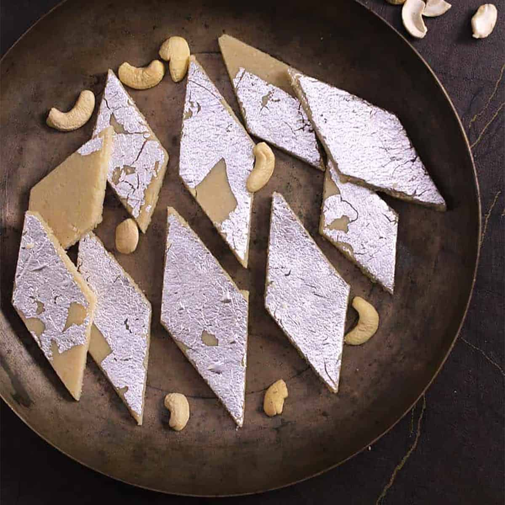

Kaju burfey

Description
Kaju Burfi is a classic Indian sweet made from cashews, sugar, and a touch of cardamom. It has a smooth, fudge-like texture that melts in your mouth, and it's usually cut into diamond shapes and sometimes topped with edible silver leaf.
It's a favorite during festivals like Diwali and is often shared as a gift at weddings and celebrations.
Ingredients
- 1 cup cashews
- 1/2 cup sugar
- 1/4 cup water
- 1/4 tsp cardamom powder
- 1 tsp ghee
- Edible silver leaf (optional)
Steps
- Grind the cashews into a fine powder, pulsing in short bursts so they don't turn oily.
- Heat the sugar and water in a pan until the syrup reaches a one-string consistency.
- Lower the heat and add the cashew powder, stirring constantly to avoid lumps.
- Add the cardamom powder and ghee, and keep stirring until the mixture forms a soft dough that leaves the sides of the pan.
- Let it cool slightly, then knead it into a smooth dough.
- Roll it out between two sheets of parchment paper to about 1/4 inch thick.
- Add the silver leaf on top if using, then cut into diamond shapes and let it set.
Home